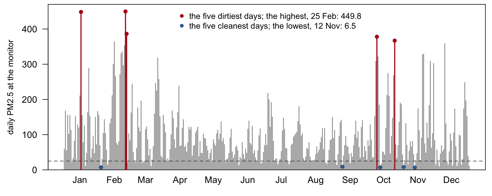
21 · Photographs I: vision models & measurement
Tuesday, November 10, 2026
Slides · Live script · Source · the project, without the photographs
Can 365 photographs of one Beijing skyline, one each morning of 2014, measure the fine-particle pollution a monitor recorded on the same days? A general vision model, asked in words before class, scored the haze in each photograph from 0 to 10. This session shows what vision models return for a photograph and who builds them, and what economists have done with photographs. It then works that one case in full: it reads the saved replies, turns 365 of them into a table, and judges the score against the monitor on days kept out of the fitting.
The project. The class zip, with the 365 photographs, is a separate download for the class, with a Cornell NetID:
https://cornell.box.com/s/u0idko147d8p6zzkvbbrit46icdg1kl6
Unzip it and open 21-photos.Rproj, so that R starts in the project folder. The scripts load what they use, jpeg and jsonlite, and install them if they are missing. Nobody needs Python, an account or the network: every model reply is saved in the folder. Its README.md says what is where. The zip on this page carries the code, the monitor file, the replies and the street photograph, and leaves out the 365 photographs: code/1_one_photo.R and the photographs drawn in code/3_judge.R need them.
The photographs. Zou Yi (邹毅), a structural engineer in Beijing, photographed the same view from his apartment window every morning of 2014 and posted the year on Weibo as one composite (北京·一目了然, season 2; Sina Weibo @邹毅的邹, WeChat @声闻于天). We have no connection to him; his series is the running example because the camera, the place and the hour are held fixed, and any fixed camera with an instrument nearby would serve as well. The photographs are shown here with credit for teaching. The public zip and the public repository leave out data/composite/ and data_clean/tiles/.
Objectives
By the end of this session you can:
- Explain what a photograph is as data: an array of numbers with a time, a place and a camera behind it.
- Say what a vision model returns for a photograph (a label, boxes and a count, a mask, an embedding, text, a number on a scale) and name the three routes to a model (a general model asked in words, a pre-trained task model, a model trained on your own labels), and say which route fits a study.
- Name three things economists have done with photographs (measure a place nobody surveyed, predict a decision or a price from what an image shows, measure who and what published images show) and where photographs that cover a place over time come from.
- Turn a photograph into a number by asking a general model in words, with a scale and a structured reply, and explain in outline how a model gets from pixels to an answer.
- Judge a photo-based measure against an outside reference on photographs held out from the fitting, and read its error.
- Train a regression on a pre-trained model’s numbers for each photograph, to go from a photograph to a quantity directly, and compare routes on the same held-out days.
- Recognise the error structure photographs carry (light, angle, weather, time of day, differences across groups), what such error does to a comparison, and the selection in who took the photograph, where and when.
Left out: running an object detector yourself, faces, satellite imagery.
Plan for today
Today: can 365 morning photographs of one Beijing skyline measure what a pollution monitor recorded on the same days? One kind of answer, a number: first from a general model asked in words, then from a model trained on the monitor. Left aside: detectors, faces, satellites.
1 · What vision models do
One street photograph
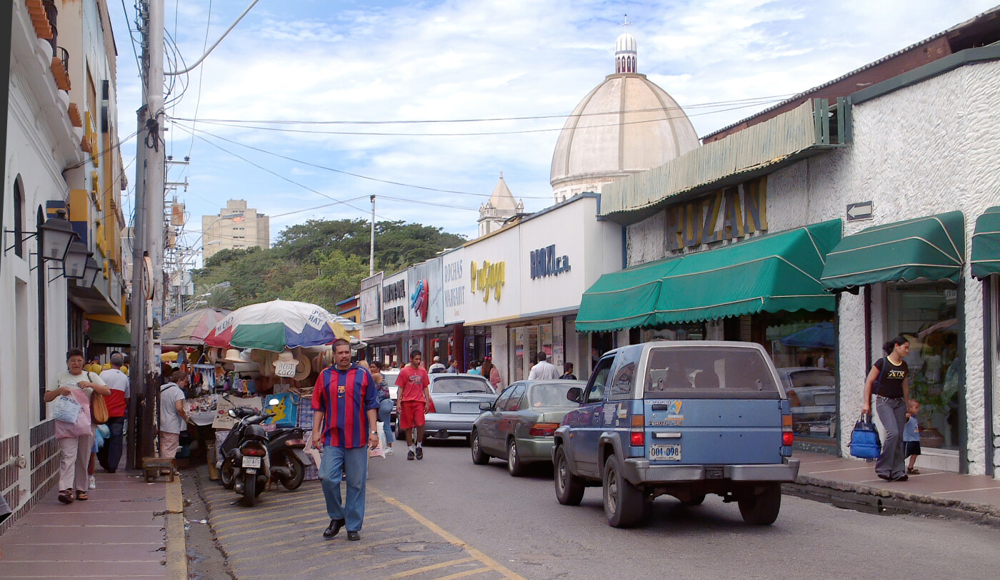
Calle Velásquez, Porlamar, Venezuela, by Wilfredor, Wikimedia Commons, CC0.
Vision tasks, as the model hub lists them
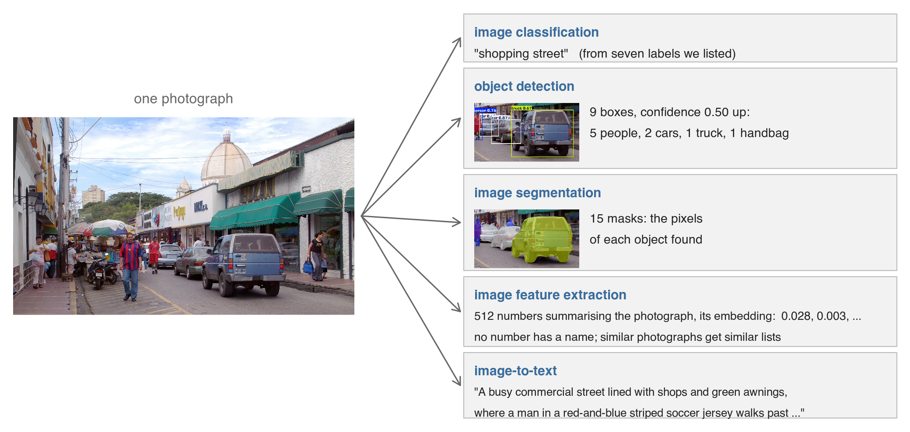
Task names as Hugging Face’s task list gives them; it lists others, such as depth estimation and text-to-image, not used here. The detector, the segmenter and the embedding model were downloaded from it; the label and the caption come from a general vision model asked in words. The 512 numbers are an embedding: a model trained to give similar photographs similar numbers produces them. Haze or colour is in them, with no number of its own.
Vision models, as Dell groups them
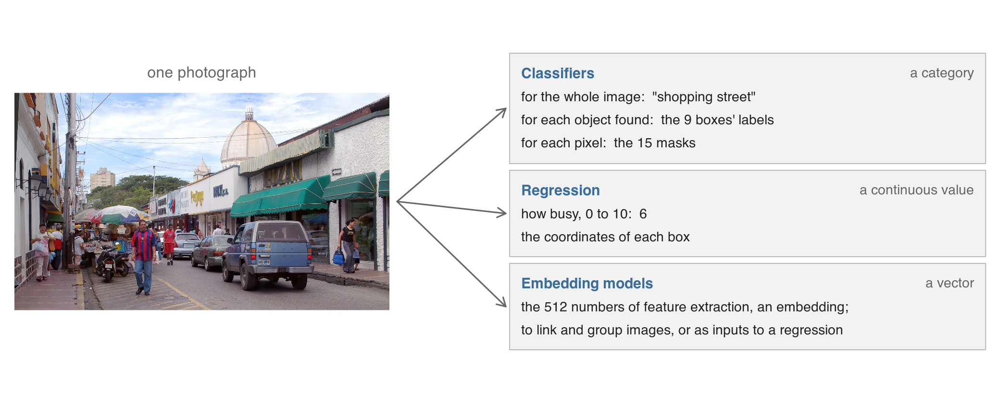
A detector drew boxes round 9 objects on this photograph; a segmenter marked the pixels of 15 objects, their masks. An embedding is a list of numbers describing the whole photograph. Dell (JEL, 2025) files box coordinates under regression; a caption has no family.
Three routes to a vision model
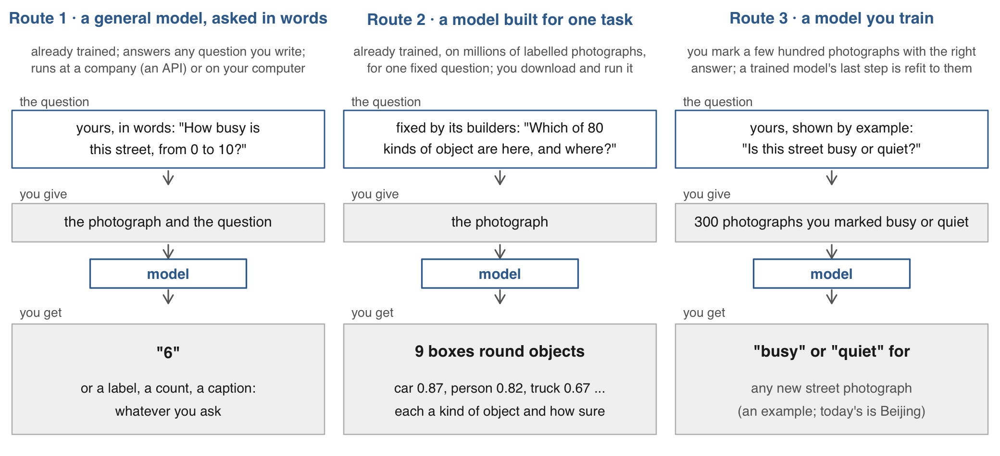
Training sets a model’s numbers from photographs with the right answers attached, their labels. An API is a company’s web service: a program sends a request and gets a reply. In route 2 the model is a detector; each decimal is how sure it is, from 0 to 1.
Six questions for one photograph. Our combination of the two groupings: six questions an economist can put to a photograph, one per kind of variable, each with its real answer on the street photograph. Five are the hub’s tasks; the number on a scale is Dell’s regression.
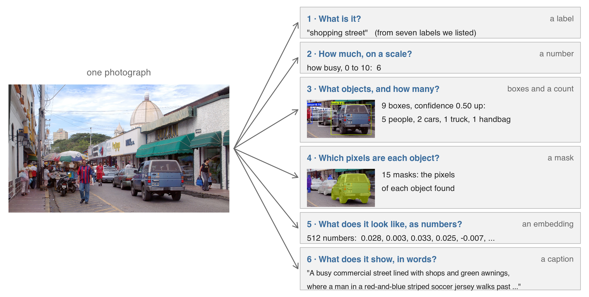
Each question by each route. Filled cells are real outputs on the street photograph. Today fills the bold cell: a number, by route 1.
| Question · answer | Route 1: a general model, in words | Route 2: a pre-trained task model | Route 3: your own labels |
|---|---|---|---|
| 1 What is it? · label | “shopping street” (of seven) | one of its fixed categories | your categories |
| 2 How much? · number | busy 6 of 10; haze 0 to 10 | a score from your labels | |
| 3 What objects? · boxes | 5 cars, 20 people | 9 boxes at 0.50 or more | your objects |
| 4 Which pixels? · mask | 15 masks: objects’ pixels | your objects | |
| 5 Numbers · embedding | 512 numbers for the photo | ||
| 6 In words · caption | a sentence: “A busy …” |
Empty cells: not run here; most are possible. The general model counted 5 cars and 20 people; the detector’s 9 boxes at confidence 0.50 hold 2 cars and 5 people, and at 0.10 ten people: a count depends on the model and the cutoff. The economist’s reference: Dell (JEL, 2025).
What each route needs from you, and roughly what it costs. A general model asked in words needs a question, a scale, a reply format and a key, and charges by tokens: 536 input tokens per 167 by 222 tile, 4,460 to 4,567 per question on the full-size street photograph; the 365 calls used 195,640 input and 27,305 output tokens. A pre-trained task model needs a download and a computer, no labels and no per-call charge, and gives only its fixed classes. A model trained on your labels needs a few hundred to a few thousand labelled photographs, a pre-trained model to start from, and a held-out set.
cost of the 365 calls, at the price table of 2026-11-09: about 1.3 USDThe task names are the computer-vision task list of the Hugging Face model hub, read 2026-11-09: image classification, object detection, image segmentation, image feature extraction, image-to-text, keypoint detection, depth estimation, mask generation, zero-shot image classification, zero-shot object detection, image-to-image, text-to-image. EconDL is the companion site to Dell (JEL, 2025).
Counts at two cutoffs. The detector draws 19 boxes at confidence 0.10 and 9 at 0.50: 10 people or 5, and 2 cars either way. The general model, asked in words, counted 5 cars and 20 people. The cutoff is the confidence below which a box is dropped. Report the model and the cutoff with every count, and count a sample by hand to compare.
| Counted by | Cars | People |
|---|---|---|
| the general model, asked in words | 5 | 20 |
| the detector, boxes at confidence 0.50 or more | 2 | 5 |
| the detector, boxes at 0.10 or more | 2 | 10 |
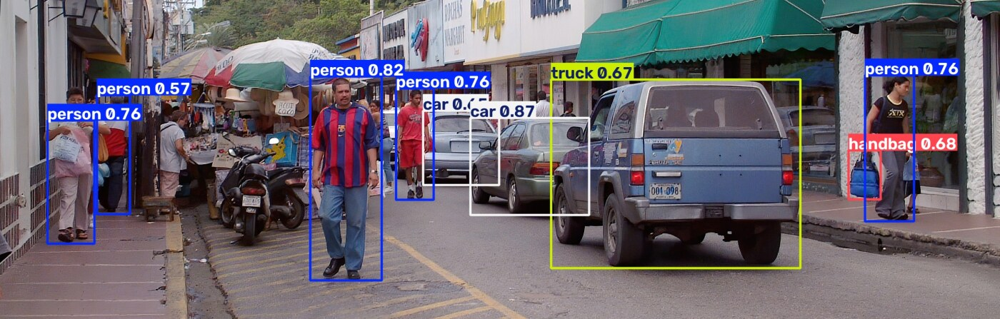
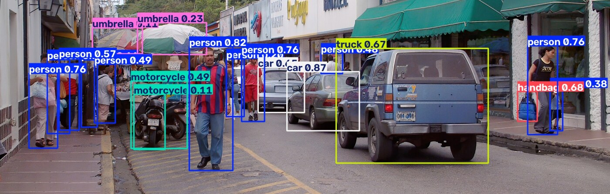
How the street outputs were made. tools/detect_street.py ran an open detector with 80 everyday object classes, an open segmenter and an open embedding model; the three are named there and nowhere on the deck. The 19 boxes: 11 person, 2 car, 2 motorcycle, 2 umbrella, 1 truck, 1 handbag; 15 masks; 512 numbers in data_clean/street/embedding.csv, one line with no header, read with scan() or read.csv(header = FALSE). tools/describe_street.R asked the four questions in replies/street_prompts.txt, with the seven labels offered.
Choosing a route for a study
| Route 1: a general model, asked in words | Route 2: a model built for one task | Route 3: a model you train | |
|---|---|---|---|
| Fits when | your question is new and no photographs have the right answer attached | the task it was built for is your question, such as finding cars | a few hundred photographs have the right answer attached (their labels) |
| In its favour | nothing to train; you can ask anything | no fee, at any scale; a file you keep, so others can rerun it | your question, in your units (micrograms); often the most accurate |
| Against it | a fee per photograph; the model can be withdrawn; coarse numbers | answers only its task; more mistakes on photographs unlike those it learned from | labels take time to make; may fail on another camera or city |
Dell (JEL, 2025): try an existing model first; starting from a trained model, a few hundred to a few thousand labels are often enough; a company’s model can be withdrawn, which a downloadable model avoids. The table is our summary.
From pixels to an answer
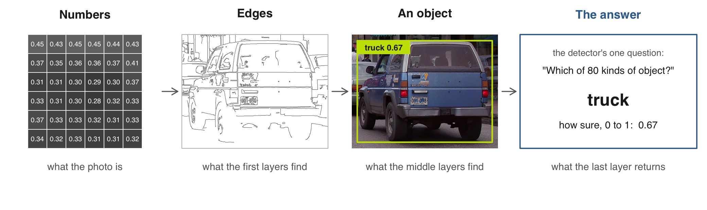
A simplified picture of convolutional networks, the kind most detectors use. General vision models first cut the photograph into patches and work differently inside; they also build from simple patterns up to whole objects. A layer is one stage of the computation. The grid holds 36 pixels, each a number from 0 (black) to 1 (white).
2 · What economists do with photographs
Street images that measure a neighbourhood
- Gebru et al. (PNAS, 2017) found 22 million vehicles in 50 million street images of 200 cities. A neighbourhood’s mix of cars predicts its income, race and voting.
- Naik et al. (PNAS, 2017) compared street images of five US cities taken years apart. Neighbourhoods dense with college graduates were more likely to improve.
The first step of Gebru et al., on our street photograph: an open detector draws a box round each object, with a label and its confidence from 0 to 1. They then classified each car’s make, model and year. Calle Velásquez, Porlamar, Venezuela, by Wilfredor, Wikimedia Commons, CC0.
Street images of single houses
- Johnson, Tidwell & Villupuram (JREFE, 2020) scored curb appeal from Street View photos near Denver. A home’s curb appeal and its neighbour’s together account for up to 7% of its sale price.
- Zou & Wang (ISPRS Journal, 2021) found abandoned houses one by one in Street View images of older industrial US cities.
- Yu et al. (Joule, 2018) located rooftop solar panels across the US, from satellite images.
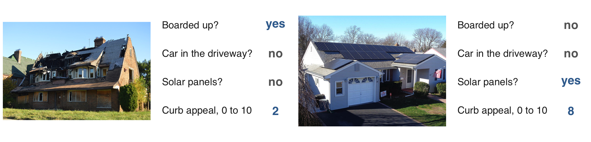
Two houses, each with an open vision model’s real answers to four questions. Each answer classifies the whole photograph. With several houses in one frame, a detector first finds each house and a classifier then labels it. Curb appeal: how attractive a house looks from the street. All three studies are in field journals. Photographs, public domain: Detroit, by Nyttend; US Department of Energy.
Photographs that predict decisions and prices
- Ludwig & Mullainathan (QJE, 2024): a mug shot’s pixels account for up to half of the predictable variation in judges’ jailing decisions.
- Aubry et al. (JF, 2023): a model values paintings from their image and catalogue facts. Those it values above the auction house’s estimate sell above it.
- Zhang et al. (Management Science, 2022): Airbnb listings given professional photographs had 8.98% higher occupancy, comparing before and after.
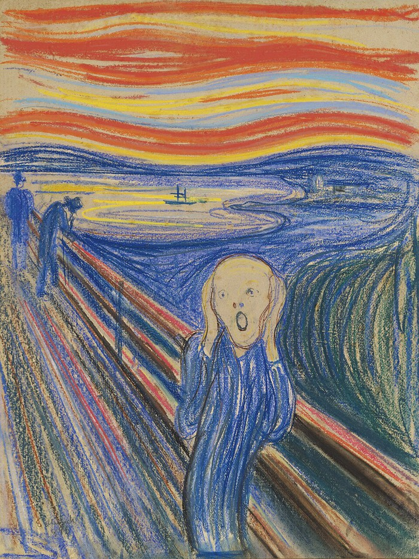
A bidder’s view: Munch, The Scream (pastel, 1895), sold in 2012 for 119.9 million dollars; public domain. A mug shot is the police photograph taken at an arrest. Ludwig & Mullainathan present their result as a way to generate hypotheses about what in a face matters.
Images in books and news
- Adukia et al. (QJE, 2023) detected the faces drawn in a century of children’s books. They classified skin colour, race, gender and age, to measure who is shown.
- Obaid & Pukthuanthong (JFE, 2022) classified news photographs by mood. Their daily pessimism index, 1926 to 2018, predicts stock-market return reversals.
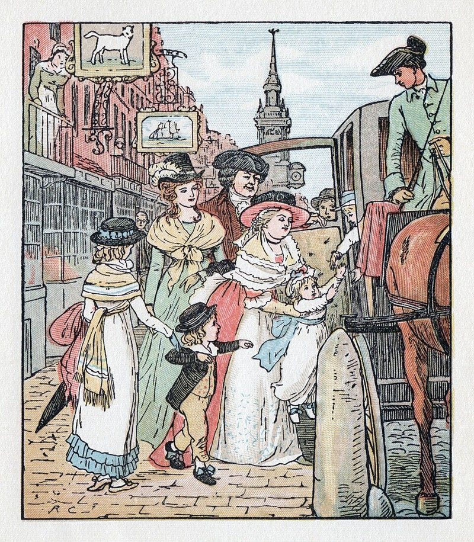
An illustration by Randolph Caldecott for a children’s picture book (1878), shown as an example of the images such a study reads. Public domain, Wikimedia Commons.
Cameras that cover a place over time
| Camera | A model could read | The record beside it |
|---|---|---|
| A city’s traffic cameras, live | vehicles per frame | counts of vehicles entering a toll zone |
| A shopping-mall camera | people per frame | heads marked by hand |
| Cameras over fields, daily for years | planting, green-up, harvest | each camera’s greenness index |
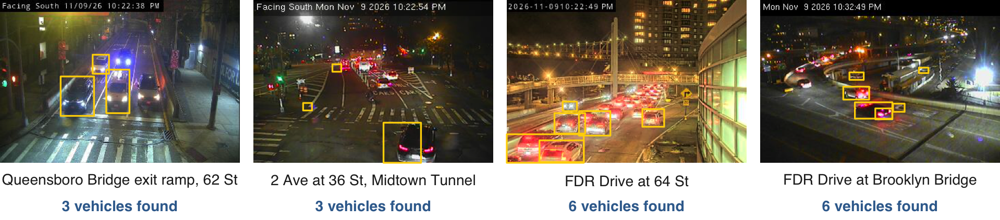
Four New York City traffic-camera frames with an open detector’s boxes; it misses most of the queue on FDR Drive. Vehicles pay a toll to enter Manhattan south of 60th Street, and the transit authority publishes the entries every 10 minutes. Read 9 November 2026: 964 city cameras; a mall’s 2,000 frames with 60,000 heads marked (Chen et al., 2012); over 1,000 PhenoCam cameras.
3 · An application to air pollution in Beijing
The question, the model and the monitor
- The first model’s task: look at one photograph and rate the haze from 0 to 10. It is used as it comes. Nothing is trained, and it never sees the monitor.
- The monitor: a device on the US Embassy roof that recorded PM2.5, fine particles in the air, every hour. Its daily mean judges each score afterwards, and later trains a second model.
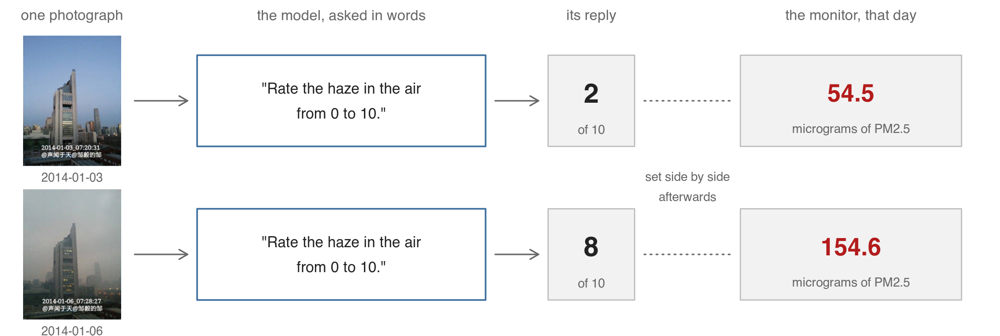
Two mornings of 2014 from the same window, with the model’s real replies and the monitor’s daily means. Photographs: Zou Yi (邹毅). Monitor: US Department of State, Mission China air quality monitoring program.
365 mornings of one skyline
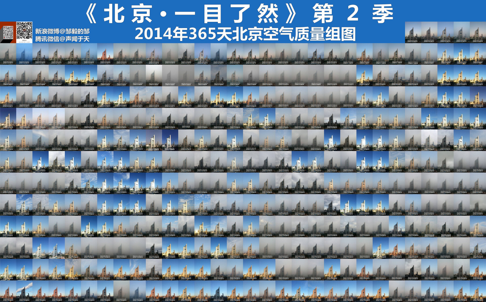
A composite tiles the 365 photographs into one image. Metadata is what comes with a photograph besides its pixels: when, where, with what camera. Here the time is burned into every caption: about 06:00 in June, 07:30 to 08:00 in December, one morning at 10:19. Zou Yi (邹毅), 北京·一目了然 season 2; Sina Weibo @邹毅的邹, WeChat @声闻于天. Shown with credit for teaching; the full set is not redistributed.
The composite is a 30 by 14 grid of 167 by 222 px tiles: the top two rows hold the title strip and the five photographs of 1 to 5 January at their right end, rows 3 to 14 hold the rest. tools/cut_tiles.R cuts the 365 tiles into data_clean/tiles/<date>.jpg. The capture times, read from the captions, run from 05:55 (17 June) to 08:33 (7 October), with one morning (6 October) at 10:19; summer about 06:00 to 06:45, winter about 07:00 to 08:05, the week of 6 to 11 October late. The caption on the 21 December tile reads 2012; it is a typo in the original, and the tile sits in the December row.
The monitor’s daily PM2.5 in 2014
One bar per day: the mean of that day’s hourly readings. The dashed line is 25 micrograms per cubic metre, the World Health Organization’s guideline for one day at the time; 318 of the 365 days were above it. These readings are what the photographs are judged against. From data_clean/pm25_daily.csv.
The five cleanest and the five dirtiest days
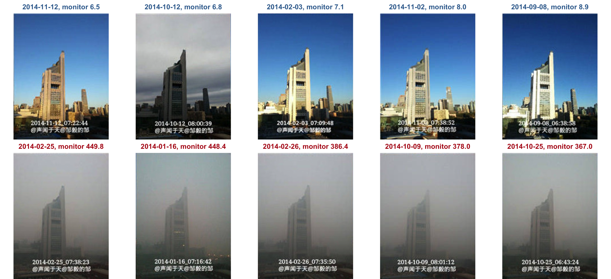
Each title: the date and the monitor’s daily PM2.5, micrograms per cubic metre. Each photograph was taken between about 06:00 and 08:30; the monitor’s value is the whole day’s mean. Photographs: Zou Yi (邹毅).
The project folder
21-photos/, as its README.md describes it
21-photos/
data/composite/ Zou Yi's 365 photographs as he published them: one large image
data/pollution/ the US Embassy monitor's hourly PM2.5 file for 2014, as downloaded
data/street/ one public-domain street photograph (Porlamar, Venezuela), for the model map
data_clean/tiles/ the 365 photographs cut out one by one, <date>.jpg, 167 by 222 px
data_clean/ the tables the scripts build: PM2.5 by day, the model's scores, both joined by date
replies/haze/ the vision model's haze score and reason for each photograph, saved as returned
replies/street/ its four answers on the street photograph; replies/*.txt: the questions asked
code/ 1_one_photo.R, 2_replies.R, 3_judge.R in lecture order; run_everything.R runs all three
tools/ what made data_clean/ and replies/ before class (needs a paid model key or Python)A photograph as an array of numbers
R Console, in the 21-photos folder. Installs jpeg and jsonlite if missing
want <- c("jpeg", "jsonlite")
need <- want[!(want %in% installed.packages()[,"Package"])]
if (length(need)) install.packages(need)
lapply(want, function(i) require(i, character.only = TRUE))R Console, in the 21-photos folder; jpeg from the chunk before; reads data_clean/tiles/2014-01-06.jpg
img <- readJPEG("data_clean/tiles/2014-01-06.jpg")
dim(img) # rows, columns, colour bands#> [1] 222 167 3round(img[1:3, 1:3, 1], 2) # the top-left corner of the red band: sky#> [,1] [,2] [,3]
#> [1,] 0.70 0.64 0.61
#> [2,] 0.69 0.67 0.77
#> [3,] 0.65 0.65 0.69round(img[150, 80, ], 3) # one pixel on the tower: its red, green and blue#> [1] 0.278 0.298 0.271A pixel is one small square of the picture, one number per band. An array has three dimensions, rows, columns and bands; dim() prints the sizes. A band is the red, green or blue layer: 0 is none of that colour, 1 is all of it. The tile is 2014-01-06, one of the Beijing mornings.
Two mornings as numbers.
R Console, in the 21-photos folder; img, the 6 January tile from the array slide; reads data_clean/tiles/2014-01-03.jpg
clear <- readJPEG("data_clean/tiles/2014-01-03.jpg")
par(mfrow = c(1, 2), mar = c(0, 0, 2, 0)) # two panels side by side, room for a title
plot(as.raster(clear)); title("2014-01-03, monitor 54.5")
plot(as.raster(img)); title("2014-01-06, monitor 154.6")
round(apply(clear[1:55, , ], 3, mean), 2) # 3: one mean per band, over the sky rows#> [1] 0.47 0.60 0.77round(apply(img[1:55, , ], 3, mean), 2)#> [1] 0.67 0.70 0.71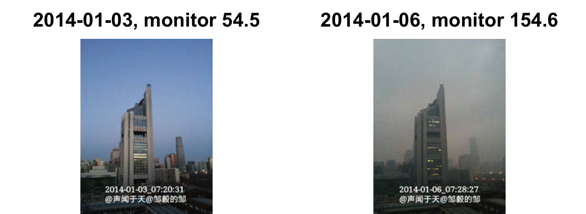
The top 55 rows are the sky above the tower; the three numbers are their mean red, green and blue. The titles give the monitor’s PM2.5 that day, micrograms per cubic metre. A vision model’s first layers work from differences like these in every pixel at once.
The monitor’s daily mean.
R Console, in the 21-photos folder; what tools/monitor_daily.R does; reads data/pollution/
h <- read.csv("data/pollution/Beijing_2014_HourlyPM25_created20150203.csv",
skip = 2, fileEncoding = "latin1") # two note lines above the header; the unit's symbol
c(hours = nrow(h), missing = sum(h$Value == -999)) # -999 is the file's mark for a missing hour#> hours missing
#> 8760 99h$Value[h$Value == -999] <- NA
h$date <- as.Date(sprintf("%d-%02d-%02d", h$Year, h$Month, h$Day)) # %d a number, %02d padded to two digits
pm <- aggregate(Value ~ date, data = h, FUN = mean) # one mean per day over its valid hours; NA rows dropped
names(pm)[2] <- "pm25"; pm$pm25 <- round(pm$pm25, 1)
nrow(pm) # no day lost#> [1] 365pm[pm$date %in% as.Date(c("2014-01-03", "2014-01-06")), ] # the two mornings shown above#> date pm25
#> 3 2014-01-03 54.5
#> 6 2014-01-06 154.6The reference is the outside measurement a photo-based score is judged against; here the monitor, in micrograms per cubic metre. aggregate() gives one mean per group. The year’s worst day is 2014-02-25, at 449.8.
The file’s eleven columns are Site, Parameter, Date, Year, Month, Day, Hour, Value, Unit, Duration and QC Name; the two header lines name the US Department of State Data Use Statement and the Mission China air quality monitoring program. 333 days have all 24 hours and 32 have 13 to 23; 9 December has 13, none before 11:00. tools/monitor_daily.R writes data_clean/pm25_daily.csv with the daily mean and the number of valid hours. The model never chose three of the eight sky levels: rain, snow, night or dark.
The question and the reply format
replies/haze_prompt.txt: the question, sent with each of the 365 photographs
This photograph of the Beijing skyline was taken from the same window one morning in 2014.
Rate the haze in the air from 0 to 10. 0 is a perfectly clear day: sharp distant buildings,
a blue sky. 10 is the densest smog: the nearest tower barely visible, no horizon.
Also name the sky condition you see and give one short reason for the score.the reply for the photograph of 2014-01-06, the hazy morning, in the form the schema requires
{"haze": 8, "sky": "heavy haze", "reason": "The near tower is visible but washed out,
the distant buildings fade into a uniform gray-brown murk, and no sky or horizon is discernible."}haze an integer from 0 to 10
sky clear, light haze, heavy haze, overcast, fog or mist, rain, snow, night or dark
reason one short sentenceThe prompt is the question, in words. A structured reply has named fields that code reads; here JSON, text with named fields in braces. The schema lists the fields and their allowed values. Sent from R to Anthropic’s API on 9 November 2026, before class; every reply is saved in replies/haze/ and the model’s name is in replies/haze_prompt.txt.
The request, run before class. One request carries the photograph as text and the question. It asks for JSON against the schema. The script saves the reply to disk unchanged, one file per morning. Nobody runs it today.
tools/score_photos.R, part, simplified (httr2); model, api_version, prompt and schema are set at its top
one_request <- function(file) {
request("https://api.anthropic.com/v1/messages") |> # the address
# who is asking: the key, read from ~/.Renviron, never typed here
req_headers("x-api-key" = Sys.getenv("ANTHROPIC_API_KEY"),
"anthropic-version" = api_version,
"content-type" = "application/json") |>
req_body_json(list( # what is sent
model = model, max_tokens = 400, # the longest reply allowed
# the three fields we require, as a schema
output_config = list(format = list(type = "json_schema", schema = schema)),
messages = list(list(role = "user", content = list(
# the photograph, its bytes written out as text (base64)
list(type = "image", source = list(type = "base64", media_type = "image/jpeg",
data = base64encode(file))),
list(type = "text", text = prompt)))))) # the question shown above
}
resp <- req_perform(one_request("data_clean/tiles/2014-01-06.jpg")) # send it
writeLines(resp_body_string(resp), "replies/haze/2014-01-06.json") # saved unchangedA saved reply is the whole response written to one file before anything is parsed. An API key is a secret string that bills an account; it lives in ~/.Renviron and is read with Sys.getenv(). base64 writes a file’s bytes out as plain text, so an image can travel inside a request. request(), req_headers(), req_body_json() and req_perform() are httr2’s.
The request in full. tools/score_photos.R sets model, api_version, prompt and schema once at the top, sends four requests at a time with req_perform_parallel(), retries failures, skips the days already saved and logs the failures in logs/. The model’s name and the version header are in the script and in replies/haze_prompt.txt: the one provenance line of the project. Why every reply is saved whole: the parse can be redone, the call cannot be repeated for the same answer.
The same question to a model on this laptop
code/4_local_model.R, part; its top sets model, prompt and schema. Needs the Ollama app running
# httr2 and base64enc are loaded; prompt is the question, schema its three reply fields
ask_local <- function(file) {
request("http://localhost:11434/api/chat") |> # the model server on this laptop
req_body_json(list(model = model, format = schema, # which model; the reply's form
stream = FALSE, think = FALSE, # one reply, in one piece
options = list(temperature = 0), # the same answer every time
messages = list(list(role = "user", content = prompt, # the same question
images = list(base64encode(file)))))) |> # the photograph, as text
req_timeout(300) |> req_perform() |> resp_body_json()
}
r <- ask_local("data_clean/tiles/2014-01-06.jpg") # the hazy morning
cat(r$message$content)its reply, as saved on 9 November 2026
{"haze": 8, "sky": "fog or mist", "reason": "The distant buildings are barely visible through the thick haze."}An open model is one whose file anyone can download and run. Ollama is a free program that runs such models and answers requests at localhost, an address on this machine. request() and the req_ functions are httr2’s. Over the 365 photographs its scores and those of Anthropic’s model correlate 0.95.
Reading each reply into a table
R Console, in the 21-photos folder; jsonlite from the first code slide; reads replies/haze/ and data_clean/pm25_daily.csv
files <- list.files("replies/haze", full.names = TRUE) # 365 files, one per morning
read_reply <- function(f) {
r <- fromJSON(f) # the saved reply, as an R list
a <- fromJSON(r$content$text[r$content$type == "text"]) # its one text block, parsed again
data.frame(date = as.Date(sub("\\.json$", "", basename(f))), # the file's name is the date
haze = a$haze, sky = a$sky, reason = a$reason)
}
x <- do.call(rbind, lapply(files[1:3], read_reply)) # three files, three rows
pm <- read.csv("data_clean/pm25_daily.csv"); pm$date <- as.Date(pm$date) # the monitor's daily mean, one row per day
merge(x[, 1:3], pm[, 1:2], by = "date") # merge(): the two tables joined by date#> date haze sky pm25
#> 1 2014-01-01 3 light haze 58.4
#> 2 2014-01-02 6 light haze 167.6
#> 3 2014-01-03 2 clear 54.5fromJSON() turns JSON into an R list; merge() joins two tables on a shared column; code/2_replies.R does all 365. A token is the unit a model reads and is charged by: 536 in and 71 out for this tile.
One saved reply, opened with fromJSON("replies/haze/2014-01-06.json"), is an R list: usage holds the tokens in and out, content the blocks of the reply, and the one text block of type text is a JSON string with the three fields, which fromJSON() parses a second time. basename() gives a path’s last part and sub() drops the .json.
Two models’ haze scores against the monitor
R Console, 21-photos folder; reads data_clean/haze_pm25.csv: one row per day, the score and the PM2.5
d <- read.csv("data_clean/haze_pm25.csv"); d$date <- as.Date(d$date)
round(cor(d$haze, d$pm25), 3)#> [1] 0.681round(tapply(d$pm25, d$haze, median)) # the monitor's median at each score#> 1 2 3 4 5 6 7 8 9 10
#> 27 47 61 78 77 89 108 152 344 184boxplot(pm25 ~ haze, data = d, xlab = "the model's haze score, 0 to 10",
ylab = "PM2.5 at the monitor, micrograms per cubic metre")tapply() applies one function by group.
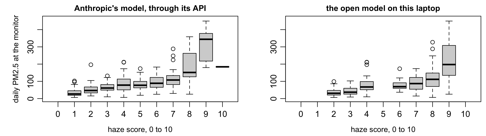
| Anthropic’s model (API) | Open model on this laptop | |
|---|---|---|
| Correlation with the monitor | 0.68 | 0.61 |
| Cost of the 365 photographs | 1.33 dollars | nothing |
| Time for the 365 photographs | about 4 minutes | about 12 minutes |
Each box holds the middle half of the days at that score; the line inside is the median. PM2.5: fine particles in the air, micrograms per cubic metre. Correlation: how closely two lists move together, from -1 to 1. Cost on 9 November 2026: 195,640 tokens in and 27,305 out, at 4 and 20 dollars per million. The API took four requests at a time; the laptop one.
Fitting days and held-out days
R Console, in the 21-photos folder; d, the 365 days, from the slides before
set.seed(6850)
fit <- sample(nrow(d), round(0.7 * nrow(d))) # row numbers of the fitting days
c(fitting = length(fit), held_out = nrow(d) - length(fit))#> fitting held_out
#> 255 110- Fitting days: the days the line is fitted on. Held-out days: kept out of the fitting; judging a line on its own fitting days flatters it.
- Seed: the same random draw every time, so everyone’s 110 days are the same.
- This is an out-of-sample test: the measure is judged on days it never saw. Cross-validation repeats such a split several times; today uses one split.
From a score to micrograms
R Console, in the 21-photos folder; d and fit from the slide before
m <- lm(pm25 ~ haze, data = d[fit, ]) # fitted on the 255 fitting days only
round(coef(m), 2) # micrograms at a score of 0, micrograms per point#> (Intercept) haze
#> 5.68 19.48setNames(round(predict(m, newdata = data.frame(haze = 0:10))), 0:10) # micrograms at each score#> 0 1 2 3 4 5 6 7 8 9 10
#> 6 25 45 64 84 103 123 142 161 181 200d$pred <- predict(m, newdata = d) # the line applied to all 365 daysCalibration: turning the 0-to-10 score into the monitor’s unit with a line fitted on the fitting days only. lm() fits the line, predict() applies it to any score, held-out days included; setNames() labels the eleven predictions with their scores.
The error on the held-out days
R Console, in the 21-photos folder; d, fit and m from the slides before
held <- d[-fit, ] # the 110 days kept out of the fitting
round(c(mae = mean(abs(held$pred - held$pm25)),
guess_the_mean = mean(abs(mean(d$pm25[fit]) - held$pm25))), 1)#> mae guess_the_mean
#> 44.2 66.0head(held[order(abs(held$pred - held$pm25)), c("date", "haze", "sky", "pm25", "pred")], 3) # the smallest misses#> date haze sky pm25 pred
#> 256 2014-09-13 3 light haze 64.5 64.10350
#> 250 2014-09-07 7 heavy haze 141.4 142.00814
#> 41 2014-02-10 1 clear 26.2 25.15119plot(held$pm25, held$pred, pch = 16, col = "grey30",
xlab = "PM2.5 at the monitor, micrograms per cubic metre", ylab = "PM2.5 predicted from the photograph")
abline(0, 1, lty = 2) # where prediction equals measurementMean absolute error: the average size of the miss, in the reference’s units, sign ignored. The comparison guess is the fitting days’ mean, 95.8. order() sorts rows by a column, abs() drops the sign.
On the held-out days the predicted and the measured values correlate 0.71. The median miss is 24 micrograms; 80 of the 110 days are within 50. Aubry et al. (JF, 2023) judge their price prediction the same way, on sales the model never saw, with the auction house’s estimate as the alternative; the figure after Exercise 2 sets the two side by side.
The error on the held-out days
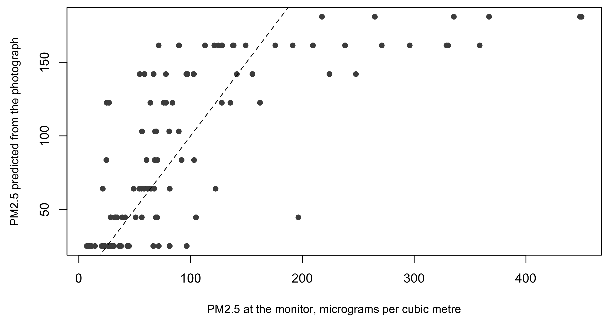
Exercise 1
A model scored the haze in each Beijing photograph from 0 to 10; a fitted line turned the score into micrograms of PM2.5 (pred). On the 110 held-out days (held) it misses the monitor (pm25) by 44 on average. Find the ten largest misses, draw those photographs, and say what nine share. 5 minutes.
held$err <- held$pred - held$pm25: positive means the photograph read too high.- Sort by
abs(err)withorder(); keep ten rows. - Draw the ten photographs with
readJPEG()andas.raster()in a 2 by 5 grid, titled with date, score, prediction and the monitor’s PM2.5. - One line on what nine share, one on the tenth.
held, order() and abs() from the slides before, or run code/3_judge.R sections 1 to 4 first. Two answers to compare with the room: on how many of the ten the photograph read too low, and what nine of those days share.
R Console, in the 21-photos folder; held from the slides before. The tile loop is in the Exercise tab
held$err <- held$pred - held$pm25
worst <- held[order(-abs(held$err)), ][1:10, c("date", "haze", "sky", "pm25", "pred")]
worst$pred <- round(worst$pred); worst
#> date haze sky pm25 pred
#> 56 2014-02-25 9 heavy haze 449.8 181
#> 16 2014-01-16 9 heavy haze 448.4 181
#> 343 2014-12-09 8 heavy haze 358.6 161
#> 298 2014-10-25 9 heavy haze 367.0 181
#> 52 2014-02-21 8 heavy haze 330.4 161
#> 324 2014-11-20 8 heavy haze 328.9 161
#> 53 2014-02-22 9 heavy haze 335.5 181
#> 362 2014-12-28 2 clear 196.4 45
#> 54 2014-02-23 8 heavy haze 296.0 161
#> 51 2014-02-20 8 heavy haze 271.0 161
sum(worst$pred > worst$pm25)
#> [1] 0All ten read too low. Nine are mornings scored 8 or 9, where the line can give at most 161 or 181, and the monitor read 271 to 450. The tenth, 28 December, was a clear morning after a night of smog.
The ten worst held-out days
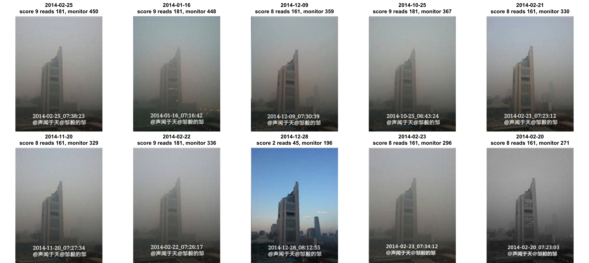
Each title: the date, the model’s score, what the line predicts, the monitor’s daily PM2.5. The model’s reason for 2014-02-25: “even the nearby tower is washed out and low-contrast … no distant buildings or horizon are visible”.
The model’s reason for each of the ten, as saved:
#> 2014-02-25 score 9, monitor 449.8
#> The sky is a uniform grey-white, and even the nearby tower is washed out and low-contrast. Its upper part fades into the smog, and no distant buildings or horizon are visible.
#> 2014-01-16 score 9, monitor 448.4
#> The nearby skyscraper is only a faint grey silhouette with its top fading into the smog. Nothing in the background is visible, and the whole sky is a uniform murky brownish-grey with no horizon.
#> 2014-12-09 score 8, monitor 358.6
#> The near tower is visible but washed out, distant buildings are faint ghosts, and the sky is a uniform gray-white with no horizon.
#> 2014-10-25 score 9, monitor 367.0
#> Only the nearest tall tower is visible, and it is faded into a uniform grey; everything beyond it, including the horizon, is completely swallowed by smog.
#> 2014-02-21 score 8, monitor 330.4
#> The sky is a uniform grey-white; the nearby tower is visible but washed out, and the distant buildings fade almost completely into the smog.
#> 2014-11-20 score 8, monitor 328.9
#> The sky is a uniform grey-white with no blue. Even the nearby tall tower looks washed out and low in contrast, and buildings in the background fade almost completely into the smog.
#> 2014-02-22 score 9, monitor 335.5
#> The nearby tower is only a faint grey silhouette with its top fading into thick smog, the sky is a uniform grey-white, and no horizon or distant buildings are visible.
#> 2014-12-28 score 2, monitor 196.4
#> Blue sky overhead with sharp tower edges and distant buildings clearly visible; only a slight whitish band of haze sits near the horizon.
#> 2014-02-23 score 8, monitor 296.0
#> The nearby tower is faint and washed out, background buildings are almost completely lost in a gray-white smog, and there is no visible sky or horizon.
#> 2014-02-20 score 8, monitor 271.0
#> The tall tower in the foreground is visible but washed out to grey, and buildings behind it nearly vanish into a uniform grey sky with no horizon, consistent with dense smog.Two patterns. The scale tops out: fourteen days scored 9 and one scored 10, and the line cannot say more than 200, while the monitor passed 271 on 43 days. The window: 28 December was photographed at 08:12 under a clear sky after a night of smog (444 at 02:00, 160 at 08:00, 32 by 13:00), scored 2, daily mean 196. On the 06:00-to-08:00 mean the readings change where it matters: 28 December 180, 16 January 496, 25 February 391; 9 December has no reading before 11:00.
The monitor’s mean at each score
R Console, in the 21-photos folder; d (with pred), fit and m from the slides before
mu <- tapply(d$pm25[fit], d$haze[fit], mean) # the monitor's mean at each score, fitting days only
round(rbind(mean_at_score = mu, line = predict(m, newdata = data.frame(haze = as.integer(names(mu))))))#> 1 2 3 4 5 6 7 8 9 10
#> mean_at_score 34 51 65 93 89 98 107 187 297 184
#> line 25 45 64 84 103 123 142 161 181 200d$pred2 <- as.numeric(mu[as.character(d$haze)]) # each day's score looked up in that table
held <- d[-fit, ] # the 110 held-out days, as before
round(c(line = mean(abs(held$pred - held$pm25)), mean_at_score = mean(abs(held$pred2 - held$pm25))), 1)#> line mean_at_score
#> 44.2 38.2A score is ordinal: it ranks the days, and the step from 8 to 9 need not equal the step from 1 to 2. Its rank correlation with the monitor is 0.75. The columns are the scores 1 to 10; one fitting day scored 10.
A model trained on the monitor’s readings
R Console, in the 21-photos folder; d (with pred) and fit from the slides before; reads data_clean/tile_embeddings.csv
E <- read.csv("data_clean/tile_embeddings.csv") # one row per day: the date, then 512 numbers
X <- as.matrix(E[, -1]) # the same days, in the same order as d
pc <- prcomp(X[fit, ]) # the 512 numbers summarised, on the fitting days only
Z <- as.data.frame(predict(pc, X)[, 1:15]) # the 15 strongest combinations, for all 365 days
tm <- lm(d$pm25[fit] ~ ., data = Z[fit, ]) # micrograms from the 15 numbers, fitting days only
d$trained <- predict(tm, newdata = Z) # our regression's micrograms, all days
held <- d[-fit, ] # the 110 held-out days, as before
miss <- function(p) mean(abs(p - held$pm25)) # the average miss on the held-out days
round(c(line = miss(held$pred), mean_at_score = miss(held$pred2), trained = miss(held$trained)), 1)#> line mean_at_score trained
#> 44.2 38.2 35.7An embedding is the list of numbers a trained model computes for a photograph; tools/embed_tiles.py made the table before class. prcomp() finds the combinations of the 512 numbers that vary most across photographs, the principal components; we keep 15. The embedding model is used as it comes (route 2); fitting our regression on its numbers is route 3, a model trained on your own labels: here the monitor’s readings.
Six approaches, judged on the same days
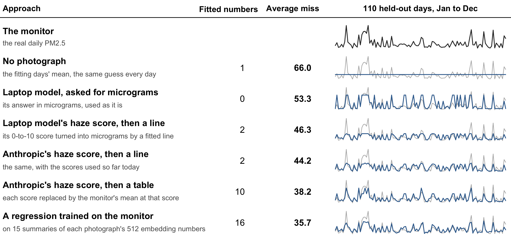
Average miss: mean absolute error on the held-out days, micrograms per cubic metre. Fitted numbers: how many were set using the monitor; the regression has 15 slopes and a constant. Every series is on one scale, 0 to 460. Asked for micrograms, the laptop model gave only 5 different answers.
What the trained model reads as clean and polluted
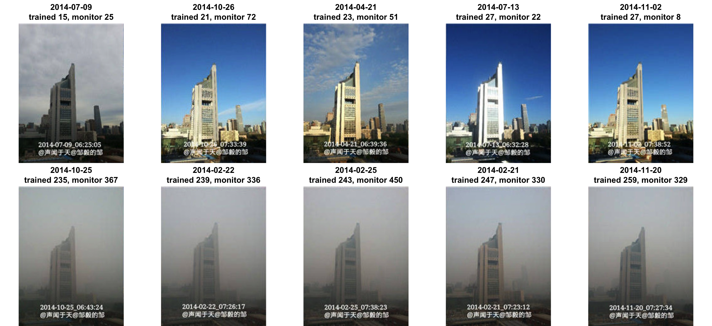
Each title: the date, the trained model’s prediction and the monitor’s daily PM2.5, in micrograms per cubic metre. None of these ten days was used to fit the model. Its highest prediction is 259; the monitor reached 450.
Exercise 2
Our regression predicts the monitor’s PM2.5 from 15 numbers per photograph: the first 15 principal components (pc) of the 512 numbers a trained model computed for it (X). More numbers always fit the 255 fitting days (fit) better. Do they predict the 110 held-out days better? 5 minutes.
- Write
err(k): refit with the firstkcomponents and return the average miss on the fitting days and on the 110 held-out days. - Run it for 5, 15, 40 and 100. Which of the two misses keeps falling as
kgrows? - Take the ten days the first method, the haze score and its line (
pred), got most wrong. On how many is the regression (trained) closer to the monitor?
Or run code/3_judge.R sections 1 to 7 first. Two answers to compare with the room: which miss keeps falling as k grows, and on how many of the ten days the trained model is closer.
R Console, in the 21-photos folder; pc, X, d, fit and held from the slides before
err <- function(k) {
Zk <- as.data.frame(predict(pc, X)[, 1:k, drop = FALSE])
mk <- lm(d$pm25[fit] ~ ., data = Zk[fit, , drop = FALSE])
c(k = k, fitting = mean(abs(fitted(mk) - d$pm25[fit])),
held_out = mean(abs(predict(mk, newdata = Zk[-fit, , drop = FALSE]) - d$pm25[-fit])))
}
round(t(sapply(c(5, 15, 40, 100), err)), 1)
#> k fitting held_out
#> [1,] 5 31.7 35.5
#> [2,] 15 30.1 35.7
#> [3,] 40 27.1 32.6
#> [4,] 100 22.2 34.4
w <- held[order(-abs(held$pred - held$pm25)), ][1:10, c("date", "pm25", "pred", "trained")]
sum(abs(w$trained - w$pm25) < abs(w$pred - w$pm25))
#> [1] 10The miss on the fitting days falls with every added number. The miss on the held-out days stops falling, so the held-out days are the judge, and k is chosen without looking at them.
How a published study tested its measure.
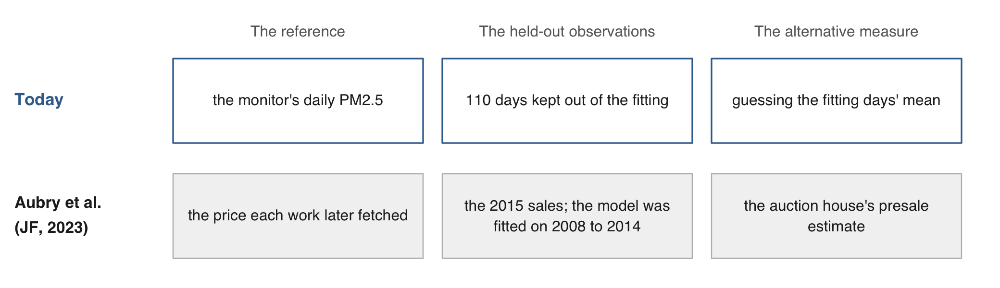
Their model was fitted on the 2008 to 2014 sales and tested on 2015, so nothing from after a sale predicts it. A photo-based measure is judged on observations kept out of the fitting, with the best available alternative beside it. Aubry, Kräussl, Manso & Spaenjers (JF, 2023).
4 · What can go wrong
Error that depends on the weather
R Console; d: one row per day, haze (the score), sky named, pm25
# the mean score and the monitor's mean, by the sky the model named
aggregate(cbind(haze, pm25) ~ sky, data = d,
FUN = function(x) round(mean(x), 1))#> sky haze pm25
#> 1 clear 1.3 40.7
#> 2 fog or mist 8.0 25.5
#> 3 heavy haze 7.2 149.1
#> 4 light haze 4.0 90.4
#> 5 overcast 4.3 41.9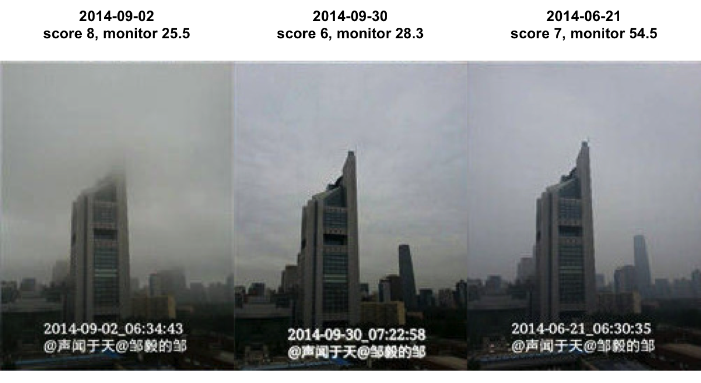
- Random error cancels over many days; systematic error goes one way under a condition: humidity, cloud, season.
- Keep the sky column and the capture time; measure the error by condition.
The three tiles are drawn with readJPEG() and as.raster() as in Exercise 1 (the code is in code/3_judge.R section 9). The held-out error by the sky the model named: clear −11.7 on 40 days, heavy haze −16.7 on 46, light haze +5.7 on 22, overcast +36.1 on 2; the fog day is a fitting day. An error that differs across groups of photographs, by season here, by place or by camera elsewhere, is the same problem, measured on each group. A humidity record would be the next column to add.
A mismatch in time windows
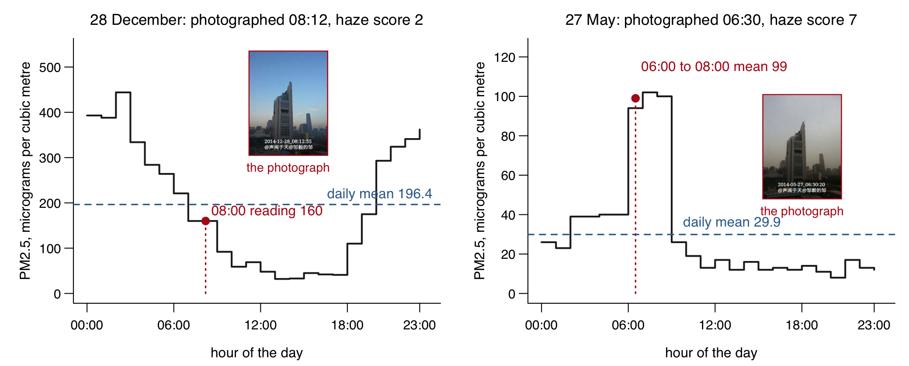
Measurement window: the span of time a measurement covers; a photograph covers an instant, a daily mean a day. On 28 December the camera saw a clear sky after a night at 444; on 27 May it saw the morning peak of a clean day. The gain over the year is small; on single days the window decides the miss. Match the monitor’s window to the photograph’s; the code is Practice task 4.
Error that biases a comparison
R Console, in the 21-photos folder; d: one row per day, pm25 (the monitor) and pred (the photograph, in micrograms, from the fitted line)
gap <- function(v, g) round(mean(v[g]) - mean(v[!g])) # one group's mean minus the other's
apec <- d$date >= as.Date("2014-11-03") & d$date <= as.Date("2014-11-12") # the APEC week
near <- d$date >= as.Date("2014-10-13") & d$date <= as.Date("2014-12-03") # that week and three weeks either side
heat <- d$date <= as.Date("2014-03-15") | d$date >= as.Date("2014-11-15") # the heating season
cmp <- rbind(apec_week = c(monitor = gap(d$pm25[near], apec[near]), photograph = gap(d$pred[near], apec[near])),
heating_season = c(monitor = gap(d$pm25, heat), photograph = gap(d$pred, heat)))
cmp#> monitor photograph
#> apec_week -67 -50
#> heating_season 39 -4| Difference in mean PM2.5 | The monitor | The photograph |
|---|---|---|
| APEC week, against the three weeks before and after | −67 | −50 |
| Heating season, against the rest of the year | +39 | −4 |
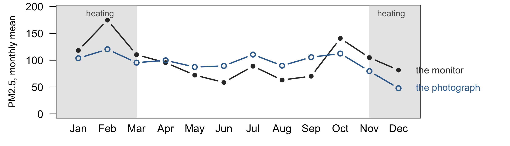
APEC week: 3 to 12 November 2014; Beijing restricted cars and closed factories for a summit. Heating season: 15 November to 15 March, the city’s district heating on (shaded). PM2.5: fine particles in the air, micrograms per cubic metre, at the US Embassy monitor. In December the photograph reads 48 and the monitor 82: the line reads low on the worst days, and cold, dry mornings look clear.
Selection in which photographs exist
| What was chosen | The 365 mornings | Street images | Photographs posted online |
|---|---|---|---|
| the place | one window, fixed | the streets a car drove | wherever the poster stood |
| the time | roughly 06:00 to 08:30, every morning | the hour the car passed | the moment the poster chose |
| which photographs survive | all 365 | every frame the car took | the ones the poster kept |
- Selection: the photographs you have are the ones someone chose to take and keep. Before using photographs as a variable, write down who took them, where, when and why, and what that leaves out.
A checklist for a photo-based measure. Who held the camera, when and where; what chose the frame and which photographs survived. The reference and its window. The held-out days. The raw replies saved whole. The question, the schema and the model recorded (replies/haze_prompt.txt).
Practice
# Practice. Run in the 21-photos folder after the slides' code has built
# files, read_reply(), h, d (with pred), fit, m and held.
# None needs a key, Python or the network.
# The replies table
# 1. The mean score by the sky the model named, beside the monitor's mean.
# Which day did the model call "fog or mist", and what did the monitor read?
# Which three sky levels did it never choose?
# 2. By month: d$month <- format(d$date, "%m"), then aggregate() the score and
# the monitor. Which month scores highest, which lowest? Do December's low
# scores mean clean air?
# 3. The words in the reasons, with grepl(): how often "sharp", "washed",
# "grey" or "gray", and "blue" appear in the reasons at scores of 2 or less,
# and at 8 or more.
# The reference and the split
# 4. The monitor at the photograph's hour: from h keep Hour %in% 6:8, one mean
# per day with aggregate(), merge() by date, cor() with the score. Compare
# with 0.68 for the daily mean. Then Hour %in% 5:10.
# 5. Days with a missing hour: keep hours == 24 (333 days) and redo the split,
# the line and the held-out error. How much moves?
# 6. Another seed: set.seed(1), then 2 and 3. How much do the line and the
# held-out error move?
# The street photograph
# 7. b <- read.csv("data_clean/street/boxes.csv"); table(b$label[b$conf >= 0.25]),
# then 0.75. Then s <- readJPEG("data/street/porlamar.jpg"); dim(s); and cut
# the truck's box (x1 1304, y1 807, x2 1895, y2 1253) out of the array with
# plot(as.raster(s[807:1253, 1304:1895, ])). Rows are y, columns are x.
# A photograph of your own
# 8. A JPEG from a phone (convert HEIC first): readJPEG(), dim(), one pixel, the
# mean red, green and blue of its top rows. A phone photograph is thousands
# of pixels on a side, so dim() is the first thing to look at.
TipSolutions
# 1. By sky; the fog day; the levels never chosen
aggregate(cbind(haze, pm25) ~ sky, data = d, FUN = function(x) round(mean(x), 1))
#> sky haze pm25
#> 1 clear 1.3 40.7
#> 2 fog or mist 8.0 25.5
#> 3 heavy haze 7.2 149.1
#> 4 light haze 4.0 90.4
#> 5 overcast 4.3 41.9
d[d$sky == "fog or mist", c("date", "haze", "pm25")]
#> date haze pm25
#> 245 2014-09-02 8 25.5
setdiff(c("clear", "light haze", "heavy haze", "overcast", "fog or mist", "rain", "snow", "night or dark"),
unique(d$sky))
#> [1] "rain" "snow" "night or dark"
# 2. By month
d$month <- format(d$date, "%m")
round(t(sapply(split(d[, c("haze", "pm25")], d$month), colMeans)), 1)
#> haze pm25
#> 01 5.0 118.3
#> 02 5.9 174.8
#> 03 4.6 110.4
#> 04 4.8 95.5
#> 05 4.2 72.3
#> 06 4.3 58.7
#> 07 5.4 88.9
#> 08 4.3 63.2
#> 09 5.1 70.2
#> 10 5.5 140.8
#> 11 3.8 104.9
#> 12 2.2 81.7
# 3. The words in the reasons, at scores of 2 or less and of 8 or more
words <- c("sharp", "washed", "gr[ea]y", "blue")
low <- d$haze <= 2; high <- d$haze >= 8
round(rbind(low = sapply(words, function(w) mean(grepl(w, d$reason[low]))),
high = sapply(words, function(w) mean(grepl(w, d$reason[high])))), 2)
#> sharp washed gr[ea]y blue
#> low 0.91 0.00 0.01 0.88
#> high 0.00 0.76 0.98 0.45
# 4. The monitor at the photograph's hour
win <- function(hours) {
w <- aggregate(Value ~ date, data = h[h$Hour %in% hours, ], FUN = mean)
z <- merge(d, w, by = "date")
c(days = nrow(z), cor = round(cor(z$haze, z$Value), 3))
}
rbind(h06_08 = win(6:8), h05_10 = win(5:10), h07 = win(7))
#> days cor
#> h06_08 363 0.703
#> h05_10 364 0.712
#> h07 361 0.699
# 5 and 6. The split, the line and the held-out error, for a table and a seed
judge <- function(dd, seed = 6850) {
set.seed(seed); f <- sample(nrow(dd), round(0.7 * nrow(dd)))
mm <- lm(pm25 ~ haze, data = dd[f, ]); p <- predict(mm, newdata = dd[-f, ])
round(c(coef(mm), days = nrow(dd), held_out = nrow(dd) - length(f),
mae = mean(abs(p - dd$pm25[-f])), guess = mean(abs(mean(dd$pm25[f]) - dd$pm25[-f]))), 2)
}
judge(d[d$hours == 24, ]) # 5: the 333 days with all 24 hours
#> (Intercept) haze days held_out mae guess
#> 5.44 20.63 333.00 100.00 38.89 59.69
rbind(seed1 = judge(d, 1), seed2 = judge(d, 2), seed3 = judge(d, 3)) # 6
#> (Intercept) haze days held_out mae guess
#> seed1 5.45 19.85 365 110 41.14 61.73
#> seed2 3.00 20.61 365 110 44.21 57.79
#> seed3 4.26 20.44 365 110 40.41 59.28
# 7. The street photograph
b <- read.csv("data_clean/street/boxes.csv")
table(b$label[b$conf >= 0.25]); table(b$label[b$conf >= 0.75])
#>
#> car handbag motorcycle person truck
#> 2 1 1 9 1
#>
#> car person
#> 1 4
s <- readJPEG("data/street/porlamar.jpg"); dim(s)
#> [1] 1374 2367 3
par(mar = c(0, 0, 0, 0)); plot(as.raster(s[807:1253, 1304:1895, ]))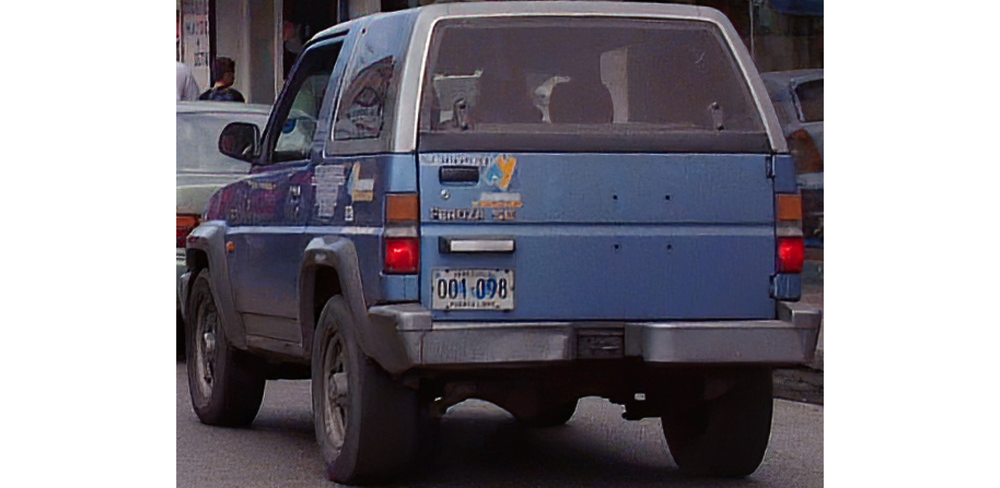
Task 2: February scores highest (5.9) and December lowest (2.2); the monitor is highest in February (175) and lowest in June (59). December’s low scores sit beside a monitor mean of 82: dry, cold, crisp mornings read as clean air. Task 4: the 06:00-to-08:00 window covers every morning but two (17 June at 05:55, 6 October at 10:19); 9 December has no reading before 11:00. Task 5: a rule about missing hours moves the answer by a few micrograms and leaves the conclusion where it was. Task 6: a held-out error can land on either side of the fitting days’ own error (39.7 here). Task 8: a phone photograph read on this machine had dim() 3024 4032 3.
Sources
Aubry, Kräussl, Manso & Spaenjers (JF, 2023); Gebru, Krause, Wang, Chen, Deng, Aiden & Fei-Fei (PNAS, 2017); Ludwig & Mullainathan (QJE, 2024); Obaid & Pukthuanthong (JFE, 2022); Adukia, Eble, Harrison, Runesha & Szasz (QJE, 2023); Hu & Ma (JF, 2025); Naik, Kominers, Raskar, Glaeser & Hidalgo (PNAS, 2017); Zhang, Lee, Singh & Srinivasan (Management Science, 2022); Johnson, Tidwell & Villupuram (JREFE, 2020); Zou & Wang (ISPRS Journal of Photogrammetry and Remote Sensing, 2021); Yu, Wang, Majumdar & Rajagopal (Joule, 2018); Dell (JEL, 2025) and its companion site EconDL. The task names are the computer-vision section of the Hugging Face task list, read 2026-11-09. Photographs: Zou Yi (邹毅), 北京·一目了然 season 2, 2014, shown with credit for teaching; who he is and how the series began: Global Times, 2022. Monitor: US Department of State, Mission China air quality monitoring program, Beijing hourly PM2.5, 2014, as the file’s header lines state. Street photograph: “Traffic and pedestrians on Calle Velásquez near Catedral San Nicolás de Bari in Porlamar, Venezuela”, by Wilfredor, Wikimedia Commons, CC0. The painting: Edvard Munch, The Scream, pastel, 1895, public domain. The illustration: Randolph Caldecott, The Diverting History of John Gilpin, 1878, public domain. The two houses: Calvert Avenue and La Salle Boulevard, Detroit, by Nyttend and a US Department of Energy photograph of a residential solar installation, both public domain; the four answers on each come from _house_questions-21.R. The cameras, all read 2026-11-09: the New York City DOT traffic cameras (964 listed, four frames saved that evening; the boxes come from _camera_boxes-21.py); the MTA’s Congestion Relief Zone vehicle entries, in 10-minute blocks since 5 January 2025; the mall dataset of Chen, Loy, Gong & Xiang (2,000 frames from a public webcam, over 60,000 heads marked, for research use); the PhenoCam network (1,088 cameras listed). The dates of the APEC traffic restrictions (3 to 12 November 2014) are as reported by Xinhua and China Daily at the time; the heating season (15 November to 15 March) is as the Beijing municipal government states it. The model and the question behind every reply are in replies/haze_prompt.txt; the open detector, segmenter and embedding model are named in tools/detect_street.py.


.jpg){kind=link}

.jpg){kind=link}